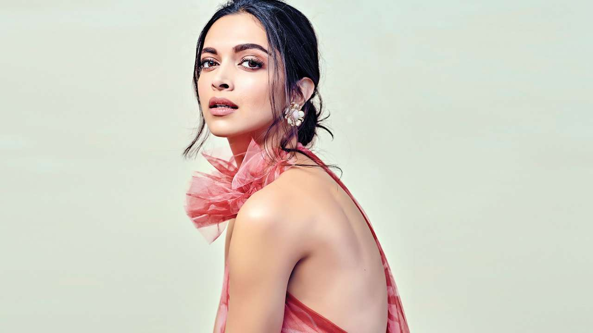

Deepika Padukone
About Deepika
- Born 5 January 1986) is an Indian actress who works in Hindi films. One of the highest-paid actresses in India
- Padukone, the daughter of the badminton player Prakash Padukone, was born in Copenhagen and raised in Bangalore. As a teenager, she played badminton in national level championships but left her career in the sport to become a fashion model
- She features in listings of the nation's most popular personalities, and Time named her one of the 100 most influential people in the world in 2018
- Padukone announced in 2006 that she would make her film debut withAishwarya, a Kannada film directed by Indrajit Lankesh.[18] The romantic comedy was a remake of the Telugu film Manmadhudu, and she was cast in the title role opposite the actor Upendra. The film proved to be a commercial success.
- Padukone shares a close bond with her family, and visits them regularly in her hometown of Bangalore.[158] She lives in Prabhadevi, a neighbourhood in Mumbai, and has admitted to missing the presence of her parents there.
- India Today featured her among the nation's 50 most powerful people in 2017 and 2019.[206][207] The global edition of Forbes ranked her as the tenth highest-paid actress in the world in 2016 and in 2018, the magazine ranked her as the highest-earning woman celebrity in India. [208][209][210] From 2014 to 2016 and in 2018, she was the highest ranked woman on the Indian edition of Forbes' "Celebrity 100" list, peaking at the fourth position in 2018 with an estimated annual earning of over ₹1.12 billion (US$15 million)
For more information checkout, Deepika Padukone on Wikipedia.[ Developed by @ Kankshini SHamkuwar. ]